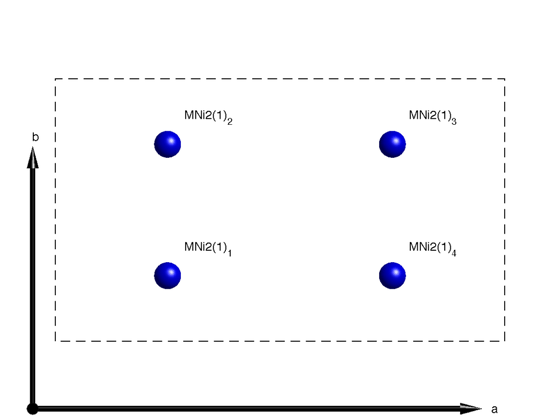
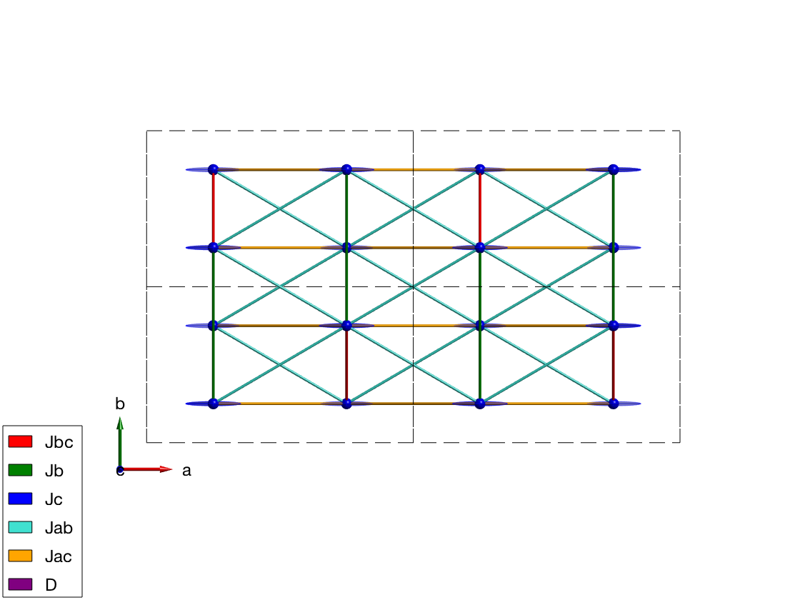
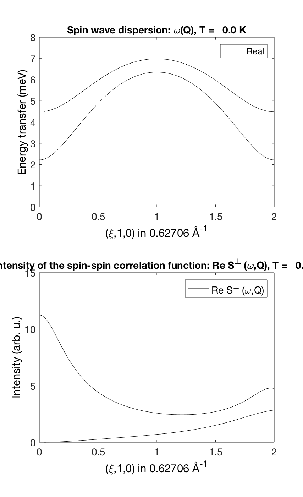
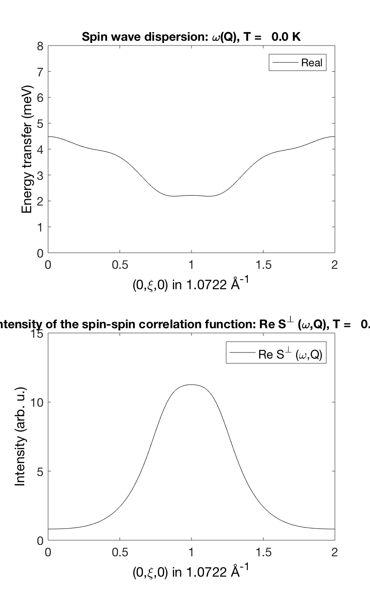
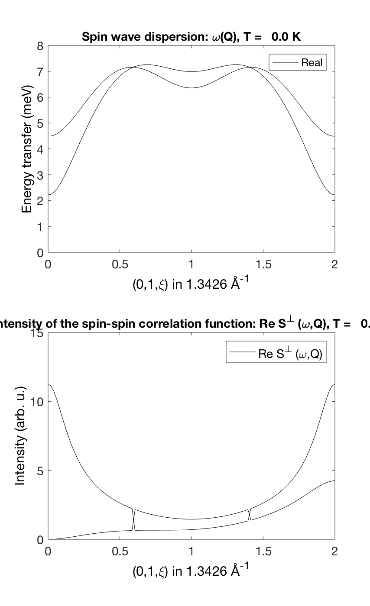

Contents
Spin wave spectrum of LiNiPO4
Spin wave model from: T. Jensen, et al., PRB 79, 6 (2009) http://arxiv.org/abs/0902.2288 or http://prb.aps.org/abstract/PRB/v79/i9/e092413 We define only the magnetic atoms of LiNiPO4
linipo = spinw; linipo.genlattice('lat_const', [10.02 5.86 4.68],'sym','P n m a'); linipo.addatom('r',[1/4 1/4 0],'S',1,'label','MNi2','color','b') linipo.gencoupling plot(linipo)
Magnetic Hamiltonian
Fitted parameters of the Hamiltonian taken from the paper at T = 1.5 K (the anisotropy values are wrong in the paper, they are corrected from the thesis of T. Jensen).
Jbc = 1.036; Jb = 0.6701; Jc = -0.0469; Jac = -0.1121; Jab = 0.2977; Da = 0.1969; Db = 0.9097; Dc = 0; linipo.addmatrix('label','Jbc','value',Jbc,'color','red') linipo.addmatrix('label','Jb', 'value',Jb, 'color','green') linipo.addmatrix('label','Jc', 'value',Jc, 'color','blue') linipo.addmatrix('label','Jab','value',Jab,'color','Turquoise') linipo.addmatrix('label','Jac','value',Jac,'color','orange') linipo.addmatrix('label','D', 'value',diag([Da Db Dc]),'color','purple') linipo.addcoupling('mat','Jbc','bond',1) linipo.addcoupling('mat','Jc' ,'bond',2) linipo.addcoupling('mat','Jb' ,'bond',7) linipo.addcoupling('mat','Jab','bond',[5 6]) linipo.addcoupling('mat','Jac','bond',[3 4]) linipo.addaniso('D') plot(linipo,'range',[2 2 1],'atomLegend',false) swplot.zoom(1.4)
Magnetic structure
We define the antiferromagnetic structure along the c-axis by direct input of the moment components.
linipo.genmagstr('mode','direct','S',[0 0 0 0; 0 0 0 0; 1 -1 -1 1])
Spin wave spectrum
We calculate spin wave dispersion to compare with Figure 1 (a-c) in the paper. We use sw_omegasum() function to eliminate zero intensity spin wave modes from the lineplots.
linipoSpec = linipo.spinwave({[0 1 0] [2 1 0]});
linipoSpec = sw_egrid(linipoSpec);
linipoSpec = sw_omegasum(linipoSpec,'zeroint',1e-3);
figure
subplot(2,1,1)
sw_plotspec(linipoSpec,'mode','disp','axLim',[0 8],'colormap',[0 0 0],'colorbar',false)
subplot(2,1,2)
sw_plotspec(linipoSpec,'mode','int','axLim',[0 15],'colormap',[0 0 0],'colorbar',false)
swplot.subfigure(1,3,1)
linipoSpec = linipo.spinwave({[0 0 0] [0 2 0]});
linipoSpec = sw_egrid(linipoSpec);
linipoSpec = sw_omegasum(linipoSpec,'zeroint',1e-5);
figure
subplot(2,1,1)
sw_plotspec(linipoSpec,'mode','disp','axLim',[0 8],'colormap',[0 0 0],'colorbar',false)
subplot(2,1,2)
sw_plotspec(linipoSpec,'mode','int','axLim',[0 15],'colormap',[0 0 0],'colorbar',false)
swplot.subfigure(1,3,1)
linipoSpec = linipo.spinwave({[0 1 0] [0 1 2]});
linipoSpec = sw_egrid(linipoSpec);
linipoSpec = sw_omegasum(linipoSpec,'zeroint',1e-5);
figure
subplot(2,1,1)
sw_plotspec(linipoSpec,'mode','disp','axLim',[0 8],'colormap',[0 0 0],'colorbar',false)
subplot(2,1,2)
sw_plotspec(linipoSpec,'mode','int','axLim',[0 15],'colormap',[0 0 0],'colorbar',false)
swplot.subfigure(1,3,1)
   Mode crossing
On the last figure, the two spin wave mode cross each other, where the order of the modes are reversed. This is a general feature of numercial eigenvalue calculations, where it is hard to follow the eigenvalues and eigenvectors through accidental degeneracy points. However at every Q point the physical quantities (mode+assigned intensity) are always right.
Written by Sandor Toth 16-Jun-2014, 06-Feb-2017